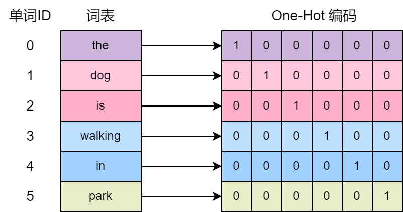
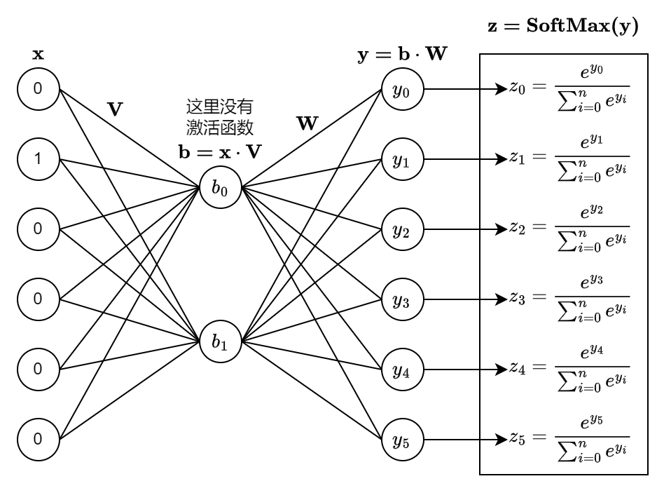
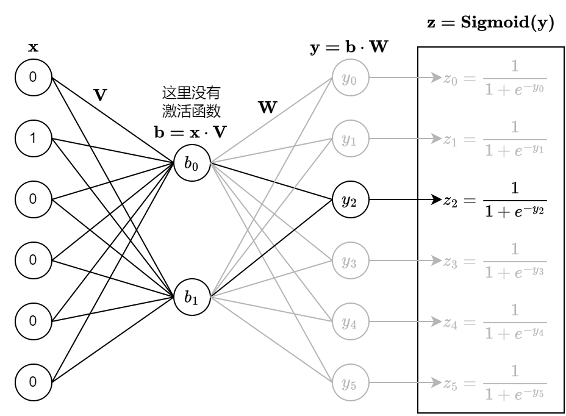

从头编写 Skip-Gram Word2Vec
条评论摘要
本文介绍了 Word2Vec 的相关背景知识，以及背后的数学原理，并通过 Python 源码实现 Skip-Gram 以及负采样方法。 本文并不会涉及 Word2Vec 的所有方面，而是从 Skip-Gram 入手，关注 Word2Vec 最核心的思想，从头开始实现一个精简版的 Skip-Gram Word2Vec。 对于算法的优化本文只会略微提及，感兴趣的读者可以自行阅读相关文献，或者原版的 Word2Vec 源码。
背景
Word2Vec 是谷歌出品，自发布以引起了广泛的关注，论文引用次数已经达到了 4 万多次。 第一篇论文 Efficient Estimation of word Representations in vector Space 对比了多种模型，并且引入了 CBOW 和 Skip-Gram 2 种 Word2Vec 模型。 Word2Vec 模型和神经网络模型相比，最大的优势加速了计算，据论文描述，单台机器每天可以训练 1000 亿个单次。 而且通过对比发现 Skip-Gram 模型在语义理解方面表现要比 CBOW 更好。 第二篇论文 Distributed Representations of Words and Phrases and their Compositionality 重点介绍的也是 Skip-Gram 模型，提出了层次 SoftMax 以及负采样和 SubSample 优化方法。 本文将只关注 Skip-Gram 和负采样，并用 Python 源码实现该功能。
单词的表示
首先分析一下，不使用
Word2Vec，直接使用神经网络训练词向量的方法以及问题。
通常单词使用字符串表示，但神经网络只能接收浮点型向量，不能接收字符串，所以得换一种表示方式。
一种简单的方式是使用 One-Hot 编码，这种方式可以把单词表示为向量。
具体的做法是，先构建一个词表，词表的大小就是向量的长度，用将单词在词表的下标位置设置为
1，其他位置设置为 0。 比如词表大小为 6，构建的词表为
[the, dog, is, walking, in, park] 对于第一个单词
dog 的 One-Hot 编码为 \([0, 1, 0,
0, 0, 0]\) 。 第二个单词 is 的 One-Hot 编码为 \([0, 0, 1, 0, 0, 0]\) 。

网络结构
这里以最简单的例子说明：只考虑连续的 2 个单词，输入为第一个单词的 One-Hot 表示，输出为第二个单词的 One-Hot 概率分布，构建一个 3 层的神经网络。 仍以上面的词表为例，那么输入和输出的 One-Hot 向量长度就是 \(6\), 隐藏层的个数为 \(2\)，同时隐藏层不使用激活函数，只在最终的输出层后面使用 SoftMax 激活，生成输出词的 One-Hot 概率分布。 损失函数使用神经网络的输出和真实词 One-Hot 编码的 CrossEntropy。

可能有人要产生疑问了，既然隐藏层没有激活函数，实际上第三层的 \(\mathbf{y}\) 直接就相当于对输入层 \({\mathbf{x}}\) 做线性变换，隐藏层还有什么存在的必要呢？
\[ \mathbf{y=b \cdot W = (x \cdot V) \cdot W = x \cdot (V \cdot W)} \]
实际上 Word2Vec 就是要训练隐藏层，把隐藏层的输出 \(\mathbf{b}\) 当作单词的向量表示，可以理解为其实就是在做矩阵分解。
时间复杂度分析
假设词表大小为 \(N\)，隐藏层大小为 \(B\)。那么输入词向量长度为 \(N\)；矩阵 \(\mathbf{V}\) 的大小为 \(N \times B\)，即 \(N\) 行 \(B\) 列；矩阵 \(\mathbf{W}\) 的大小为 \(B \times N\), 即 \(B\) 行, \(N\) 列。
第一层是输入，无需计算。
第二层的计算 \(\mathbf{b = x \cdot V}\) ，对于常规的矩阵计算，时间复杂度为 \(N \times B\)，由于输入向量是 One-Hot 编码，相当于直接从 \(\mathbf{V}\) 中取出第 \(k\) 行，时间复杂度为 \(O(1)\)。
第三层的计算 \(\mathbf{y = b \cdot W}\)，由于 \(\mathbf{b}\) 和 \(\mathbf{W}\) 都是稠密向量，无法优化，计算的时间复杂度为 \(B \times N\)。
可以发现第一层和第二层的计算开销可忽略不计，最关键的是第三层的计算开销。 如果词表大小达到百万量级，隐藏层达到 \(1000\) 维的话，单是训练一个单词，计算量就达到了 \(10^3 \times 10^6 = 10^9\)，而语料库中的单词可能达到数十亿以上。 这种时间复杂度对于训练整个语料库几乎是不可行的，需要进行优化。
在 Word2Vec 中，提到了 2 种优化的方法：层次化 SoftMax 和 负采样。由于层次化 SoftMax 实现起来更加复杂，而且优化效果也不如负采样，本文重点儿阐述负采样方法。
层次化 SoftMax
层次化 SoftMax 方法构建了一颗哈夫曼树，在训练的过程中使用贪心方式沿着二叉树路径从上到下做二分类，最终遍历到叶子节点，也就是概率最大的词。 该方法可以将时间复杂度降低为 \(B \times log(N)\)。
负采样
使用负采样方法时，神经网络的输入为一个词的 One-Hot
编码，输出层不再使用 SoftMax，而是使用 Sigmoid 做二分类。
仍然以上面的词表为例，假设有这样一条样本：第一个词为
dog，第二个词为
is，把在原始训练中的样本称为正样本。 由于 dog
在词表中的下标为 \(1\)，那么神经网络的输入就是向量 \([0,1,0,0,0,0]\)；is
在词表中的下标为 \(2\)，在训练的时候，在输出层只计算 \(z_2 = Sigmoid(y_2)\)，把 \(z_2\) 的当成是输出为 is
的概率。 我们希望 \(z_2\) 尽可能的接近
\(1\)，损失函数为 \(z_2\) 和 \(1\) 的 CrossEntropy。

如此一来，训练的开销会大大降低，但是也丢失了一些信息，需要加入一些负样本。
负样本的生成方法是随机生成，原始的 Word2Vec
方法是按照词频的概率生成负样本，本文为了简单起见，使用的是均匀分布生成负样本。
比如对于第一个词 dog，随机生成的下一个词是
park，把这条训练数据当作负样本。 由于 park
在词表的下标为 \(5\)，神经网络在输出层只计算 \(z_5=Sigmoid(y_5)\)，把 \(z_5\) 的当成是输出为 park
的概率。 由于是负样本，我们希望 \(z_5\)
尽可能的接近 \(0\)，损失函数为 \(z_5\) 和 \(0\) 的 CrossEntropy。
对于每条正样本，同时构造生成 \(K\) 条负样本，对于每条训练样本，第三层的时间复杂度为 \(O(K \times B)\)，这里 \(K\) 是超参数。 \(K\) 可以取 \(10\) 左右，而 \(B\) 取到 \(1000\) 也足够了，训练一个单词的开销比原始的方法下降了好几个数量级，更具备可操作性。 谷歌的论文提到单台机器每天可训练千亿个词。
Skip-Gram
前面的介绍只是为了便于理解，简化后的场景。 实际上 Skip-Gram
的做法是：给定一个单词，需要预测其周围 \(2
\times c\) 个单词的概率，即这个单词之前的 \(c\) 个词以及之后的 \(c\)
个词，而且不考虑单词之间的顺序，以及单词和中心词的距离。
假设语料库中有一句话是
the dog is walking in the park，当前中心词是
is，\(c\) 等于
2，那么就有三条正样本：
1 | (is, the) |
以下开始实战部分，通过 Python 代码以及 numpy 库实现一个简化版的 Word2Vec。
数据准备
这里的数据集使用原版的 Word2Vec 用到的数据集。 1
2wget http://mattmahoney.net/dc/text8.zip -O text8.gz
gzip -d text8.gz -f
语料库解析
语料库中就是一个接一个的单词，但是这个语料库中没有句子的分隔符。以下代码把它们当成一句话来处理了。为了便于测试，可以在解析时支持指定最大的单词个数，本例中指定单词个数为
10000。 在解析时需要将单词转换为整数，这个整数就是单词在词表中的下标。
比如语料库为：the dog is walking in the park，词表为：[the, dog, is, walking, in, park]，输出的
Tokens 为 [0, 1, 2, 3, 4, 0, 5]
1 | #!/usr/bin/env python |
构建训练正样本
首先枚举每一个单词作为中心词，然后再枚举周围词，作为正样本。
1 | def get_skip_gram_pairs(tokens, window): |
梯度更新
这里没有使用机器学习框架，也没有自动微分功能，需要推导梯度更新公式。 损失函数为 \(\sigma(y)\) 和真实值之间的 CrossEntropy。 \[ L = −[label*log(\sigma(y))+(1−label)log(1−\sigma(y))] \]
其中 \(\displaystyle \sigma(y) = \frac{1}{1+e^{-y}}\)，\(\displaystyle \frac{\mathrm{d}}{\mathrm{d} y} log(\sigma(y)) = 1-\sigma(y)\)，\(label\) 的取值只能是 \(0\) 或者 \(1\)。
当 \(label\) 取值为 \(1\) 时： \[ \begin{align} L_+ &= -\log(\sigma(y)) \\ \frac{\partial L_+}{\partial y} &= \sigma(y) - 1 \\ \end{align} \] 当 \(label\) 取值为 \(0\) 时： \[ \begin{align} L_- &= -\log[1 - \sigma(y)] \\ \frac{\partial L_-}{\partial y} &= \sigma(y) - 0 \\ \end{align} \] 综合起来，可以得到输出层的梯度公式： \[ \begin{align} \frac{\partial L}{\partial y} &= \sigma(y) - label \\ \end{align} \] 而之前层的网络参数，可以通过反向传播算法更新梯度计算。
模型训练
这里使用随机梯度下降以及反向传播训练模型。 需要定义 \(2\) 个变量 \(embed\_in\) 和 \(embed\_out\) 来存储网络模型参数，分别对应之前介绍的矩阵 \(V\) 和矩阵 \(W\)。 输入为中心词的下标假设为 \(s\)，当前预测的周围词下标为 \(t\)。 第二层的输出直接就是 \(embed\_in[s]\)，第三层的输出为 \(y = embed\_in[s] \cdot embed\_out[t]\)
1 | import numpy as np |
主流程
将之前的代码组合起来，形成完成代码。
1 | def main(): |